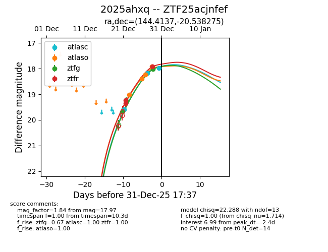
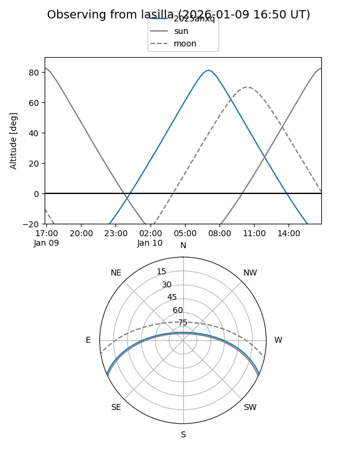
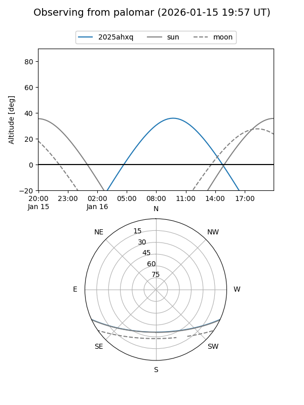
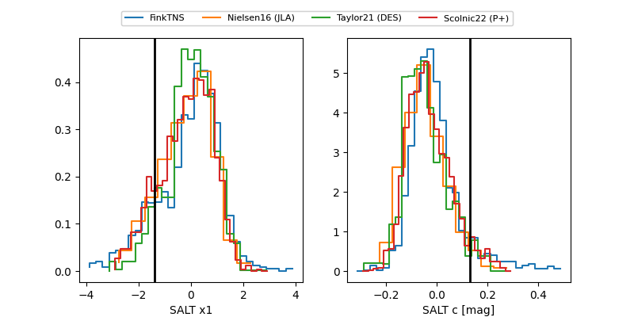

2025ahxq
Target 2025ahxq at 2026-01-14 10:47
Aliases and brokers:
FINK: link
Lasair: link
ALeRCE: link
TNS: link
YSE: link
alt names
ZTF25acjnfef (ztf,fink_ztf)
2025ahxq (tns,yse)
Coordinates:
equatorial (ra, dec) = 144.4137,-20.53828
equatorial (HMS+DMS) = 09:37:39.30,-20:32:17.79
galactic (l, b) = (253.2884,+23.13237)
Flags:
Photometry:
last atlasc=17.96, atlaso=18.27, ztfg=18.01, ztfr=18.29
3 atlasc, 13 atlaso, 4 ztfg, 4 ztfr detections
Lightcurve

Visibility


Additional plots
